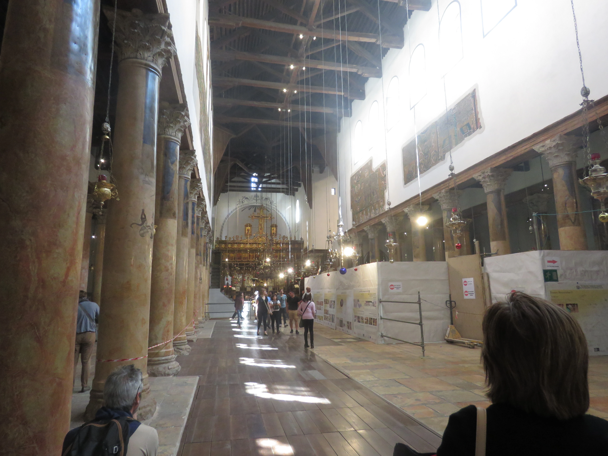

Hi! Here are some photos of places I've been to and just some photography I've done awhile back and present..
Quick tip, when entering the site just let it load completely then search around. For the photos that have a lot of text covering the photo when you hober over it just click the outer sides of the picture that isnt blocked by the text to see full photo.
×
This is a Great Egret I captured one morning while walking in my backyard. I recorded a video of this bird finding prey to eat, and what it does is slowly approach a dragonfly, waffle its neck and body, and then pounce to catch the fly. It was a pretty interesting sight.
A hunting position.
I caught some great photos of these two dragon flies.
I really love how in this one you get to see its lil face.
Two buds hanging out
This was a lucky shot.I just wanted a picture of the flower but a cute little bee wanted some nectar at the same time.
I honestly don't know what type of species this is but when taking this the lizard ran up to me, stared at me, then went over to this branch. Pretty chill.
Here is one of my states invasive species. See these guys EVERYWHERE! But they can be very photogenic.
I really love this photo of a Muscovy Duck. This female seemed to be very interested in me taking her photo. I was really happy hheehe.
Shes gorgeoous.
One night, while walking my dog, I accidentally ran into a huge spider web and was lucky to find this spider weaving its web. I then spent the next hour trying to take photos of the entire spider.
A full body shot
If you look closely you can see the spiders silk coming out as it spins its webbing.
On the same night I was also greeted by this toad. I wish I had a little wizard hat to put on him. I should get some.
Crow in lake eating some sort of nut.
A beautiful Blue Jay I caught looking for some grub.
I don't know the species but this lucky bird got a worm
Yum yum yuum
My beautiful Daisy. This is an earlier photo of her, shes getting pretty old now but still so gorgeous.
Showing us her side profile.
My very handsome, adorable little Leo. He has slowly transformed into Garfield.
These next 10 photos were taken in the UK.
This was taken after I had left the station from the Heathrow airport to Hyde Park Corner. This is Statue of Duke of Wellington and some arch.
A closer image of the arch.
Began the walk through Hyde Park towards the Buckingham Palace. This cute lil fellow decided to smile and wave for the camera.
A wide view of how huge this park was.
A view of the Palace.
I don't know what this building is but I found it so mesmerizing, especially with the sunlight casting its this glow on it like this.
I really liked how these branches looked and whatever those balls are. I still wonder what type of tree that was.
Some street performer doing a silly trick while looking silly.
This arch was so beautifully made just had to take a photo.
This was taken near a outdoor mall somewhere in Israel.
This is "my" Israeli cat Juno. For the five times I've visted there was a stray that was so sweet and had the silliest meow. I wonder what shes up to now.
The Dead Sea
Mountains near The Dead Sea
Visited a cave in Palestine and found it cool to see all the graffiti on the ceilings.

Inside the Church of the Nativity in Bethlehem
Past the Western Wall
The Western Wall with The Dome of the Rock next to it.
The inside of the Tower of David.
Overhead view of an entry way to the markets.
A little window inside one of the rooms in the Tower of David.
During my trip to Italy inside the Vatican museum.
Artwork on the ceilings. My neck hurt so much.
A gorgeous tile piece.
Overhead view of Rome.
This was such an incredible experience seeing such magnificent art.
I want this in my room.
bootiful
Wish I got a better photo of this whole corridor but it was filled with these tapestry of maps.
THE TIME IT TOOK TO MAKE ALL OF THIS! MY GOD!
So amazing my god.
These hallways were so so so soooo soo SOOO long. Jammed packed with people I felt like a sheep being herded from corridor to corridor.
So bigg. So much walking it took nearly three hours to get to the Sistine Chapels.
This photo was taken during my visit to my partner's place, which is located in the more country area of the state I live in. Unfortunately. The area has abandoned houses and discarded furniture along the backroads.
An abandoned house riddled with trash around the house and unkept lawn.
An abandoned truck.
There was another car left in a similar state around this one.
Cute lil snail guy :3 loved this little dude.
The clouds today were exceptionally large and seemed to blanket the sky. It was a good ride.
It's quite common in my area to find large fields with power lines running through them. They should just put a huge walmart there honestly.
I found this image both comforting and sad. The weathered wood, the children's playground tucked away in the back alley of a run down plaza. It felt both familiar and melancholic.
The photo my preschools playyard.
The entrance to the preschool.
One of my favorite places to eat when given the chance. I miss it.
I find it interesting how this used to be a bank. Now, the spot where you'd once deposit your checks through the tube is used for parking.
Looks like someones was unlucky.
I used to run through this little area after being picked up from my preschool by my sister. She would say there were spiders and alligators. I don't know why.
Some construction workers taking their afternoon map after having their lunch. Seems so peaceful to take a nap outside.